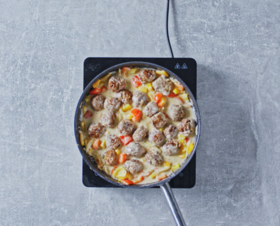

hackbaellchen-in-paprika-sahne-sauce

Hackbällchen, Paprika, Sahnesauce.
- Knoblauch
- Zwiebel
- Hackfleisch
- Öl
- Reis
- Paprika
- Sahne
- Knoblauch schälen und fein hacken. 1 Zwiebel halbieren, schälen und fein würfeln. In einer Schüssel Hackfleisch mit Knoblauch und Zwiebel verkneten, mit Salz und Cayennepfeffer kräftig würzen. Aus der Masse etwa 4 cm große Bällchen formen.
- In einer Pfanne Öl auf mittlerer Stufe erhitzen und Hackbällchen rundherum ca. 10 Min. knusprig braten.
- In einem Topf Reis mit 700 ml Salzwasser zum Kochen bringen und zugedeckt ca. 15 Min. weich garen.
- Inzwischen Paprika putzen, entkernen und in grobe Stücke schneiden. Übrige Zwiebel halbieren, schälen und in Streifen schneiden. Bällchen aus der Pfanne nehmen, Paprika und Zwiebel im Bratfett ca. 5 Min. braten.
- In einer Schüssel Sahne, Brühe und Stärke verrühren. In die Pfanne gießen und unter Rühren ca. 3 Min. aufkochen. Mit Salz, Pfeffer, Zucker, Paprikapulver und Oregano abschmecken. Hackbällchen darin erwärmen und mit Reis servieren.